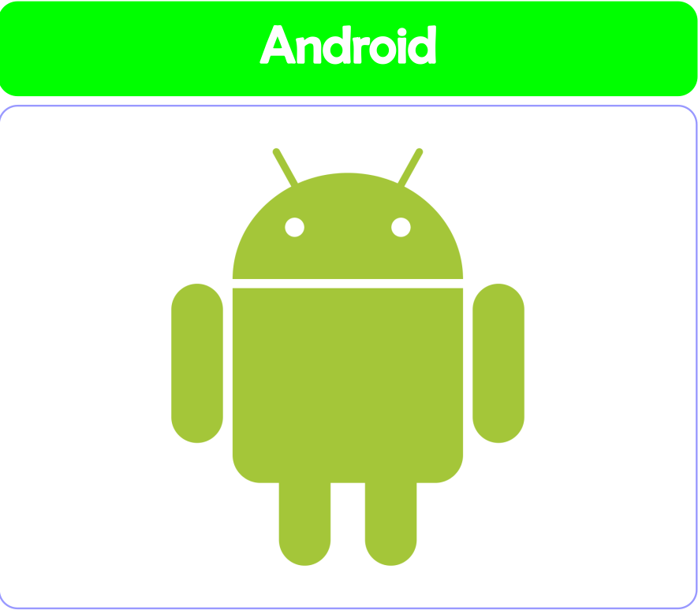
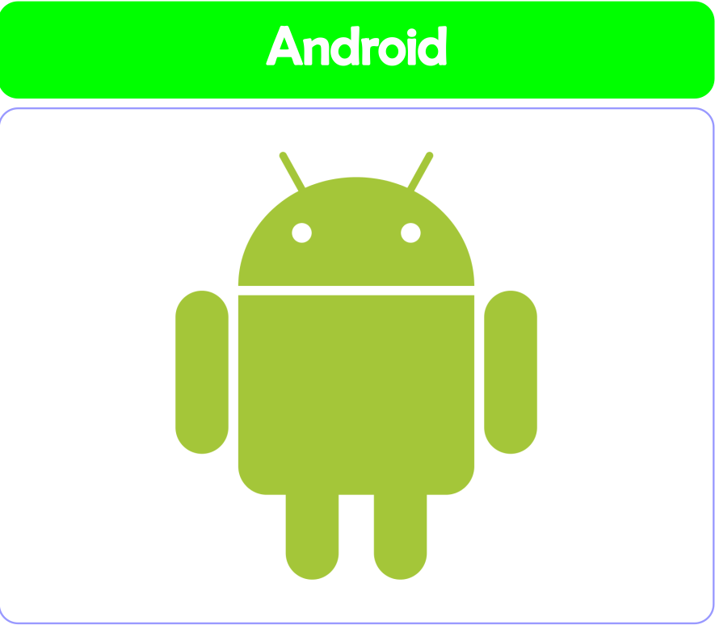
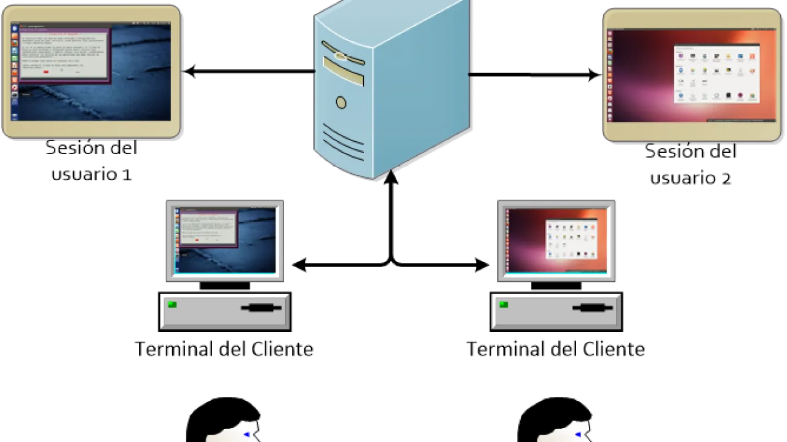
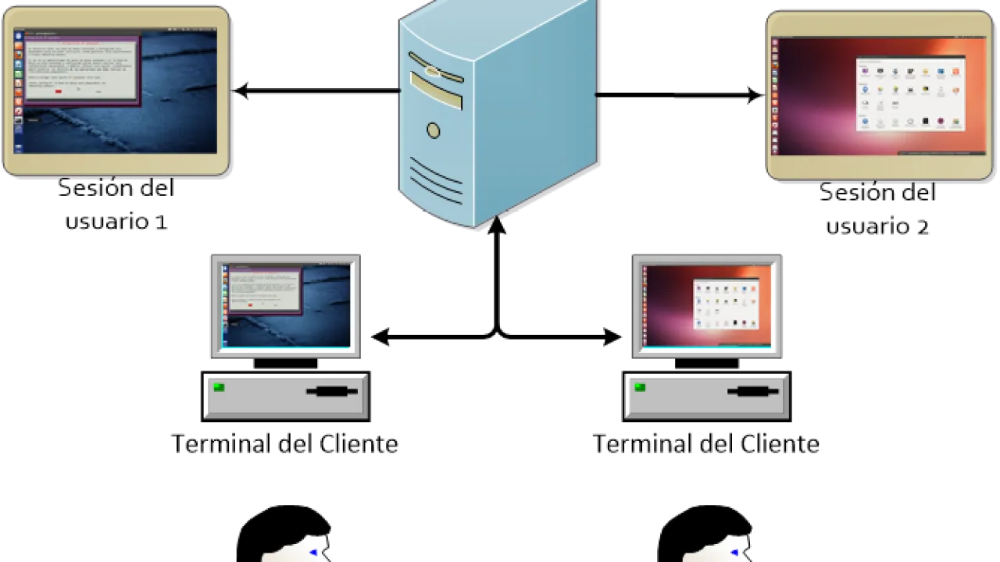

¿Qué son los sistemas operativos?
Un sistema operativo es el encargado de brindar al usuario una forma amigable y sencilla de operar, interpretar, codificar y emitir las ordenes al procesador central para que este realice las tareas necesarias y especificas para completar una orden.
El sistema operativo, es el instrumento indispensable para hacer de la computadora un objeto útil. Bajo este nombre se agrupan todos aquellos programas que permiten a los usuarios la utilización de este enredo de cables y circuitos, que de otra manera serian difíciles de controlar. Un sistema operativo se define como un conjunto de procedimientos manuales y automáticos, que permiten a un grupo de usuarios compartir una instalación de computadora eficazmente.


 


 
